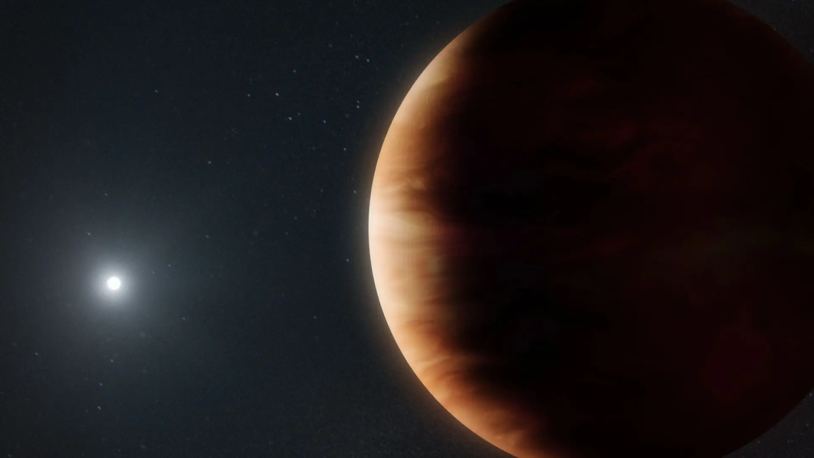

Dwarf planets & small worlds
Dwarf planets are celestial bodies that share many characteristics with the eight major planets of the Solar System but differ in one key aspect: they have not cleared their orbital neighborhoods of other debris. This distinction places them in a unique category of planetary-mass objects. The most well-known dwarf planets include Ceres, Pluto, Haumea, Makemake, and Eris. These objects are fascinating remnants of the early Solar System, preserving primitive material that offers valuable insights into the processes that shaped our cosmic neighborhood billions of years ago.
Studying dwarf planets helps scientists understand planetesimal formation, volatile transport, and the processes that shaped the outer Solar System. Many dwarf planets host moons, atmospheres (transient or seasonal), and complex geology driven by cryovolcanism, tectonics, or impact resurfacing.

Ceres
Ceres, the largest object in the asteroid belt between Mars and Jupiter, is a fascinating world that blurs the line between asteroids and planets. With a diameter of approximately 940 kilometers, Ceres is the smallest recognized dwarf planet in the Solar System. Its surface is a mix of water ice and hydrated minerals, such as carbonates and clays, which suggest the presence of liquid water in its past. Observations from NASA's Dawn spacecraft revealed bright spots on Ceres, most notably in the Occator Crater. These bright areas are deposits of sodium carbonate, a type of salt that likely formed from briny water seeping to the surface and evaporating. This discovery has made Ceres a key target in the search for extraterrestrial life, as it indicates the potential for subsurface liquid water.
Ceres's surface is heavily cratered, with features that hint at a dynamic history. The presence of cryovolcanoes, such as Ahuna Mons, suggests that internal processes have shaped its surface over time. Unlike traditional volcanoes, cryovolcanoes erupt with a mixture of water, salts, and other volatiles instead of molten rock. Ceres's relatively low density and the detection of ammonia-bearing clays indicate that it may have formed in the colder outer Solar System and later migrated inward. This migration could explain its unique composition compared to other objects in the asteroid belt.
The study of Ceres provides valuable insights into the early Solar System and the processes that led to the formation of planets and moons. Its location in the asteroid belt makes it a natural laboratory for understanding the transition from small, rocky bodies to fully-fledged planets. Future missions to Ceres could focus on exploring its subsurface ocean, analyzing its surface chemistry in greater detail, and searching for signs of past or present life.
Pluto
Pluto, once considered the ninth planet of the Solar System, is now classified as a dwarf planet and one of the largest known members of the Kuiper Belt. With a diameter of 2,377 kilometers, Pluto is about two-thirds the size of Earth's Moon. Its surface is a complex and dynamic landscape, featuring nitrogen ice plains, towering water-ice mountains, and a thin atmosphere composed mainly of nitrogen, with traces of methane and carbon monoxide. The heart-shaped Tombaugh Regio, named after Pluto's discoverer Clyde Tombaugh, is one of its most iconic features and a testament to its geological diversity.
Pluto's atmosphere undergoes seasonal changes as it moves closer to and farther from the Sun during its 248-year orbit. When closer to the Sun, the surface ices sublimate into gas, creating a temporary atmosphere. As Pluto moves away, the atmosphere freezes and falls back to the surface. This cycle of sublimation and deposition has a significant impact on its surface features and climate. The New Horizons mission, which flew by Pluto in 2015, provided unprecedented views of its surface and revealed a world far more complex than previously imagined. The mission also discovered that Pluto has five moons: Charon, Styx, Nix, Kerberos, and Hydra. Charon, the largest, is so massive relative to Pluto that the two are often considered a double dwarf planet system.
Pluto's geological activity, such as the presence of flowing nitrogen glaciers and possible cryovolcanism, challenges traditional notions of what a small, cold world can be. The detection of organic compounds and the potential for a subsurface ocean make Pluto an intriguing target for future exploration. Understanding Pluto's composition and evolution could provide clues about the formation of the outer Solar System and the potential for habitability in icy worlds.
Haumea
Haumea, one of the most unusual dwarf planets, is located in the Kuiper Belt and is known for its elongated shape and rapid rotation. With a diameter of approximately 1,960 kilometers along its longest axis, Haumea's shape is the result of its fast rotation, which completes in just under four hours. This rapid spin has caused Haumea to become elongated, making it one of the most distorted objects in the Solar System. Haumea's surface is covered in crystalline water ice, which reflects sunlight and gives it a bright appearance. The presence of water ice suggests that Haumea has undergone significant resurfacing, possibly due to past collisions or internal activity.
Haumea is also unique for its ring system, the first discovered around a dwarf planet. The ring is located close to the planet's equator and is thought to be composed of particles ejected from its surface during past impacts. Haumea has two known moons, Hiʻiaka and Namaka, which are believed to have formed from debris resulting from a massive collision. This collision may also explain Haumea's rapid rotation and elongated shape.
The study of Haumea provides valuable insights into the dynamics of the Kuiper Belt and the processes that shape small, icy worlds. Its unique characteristics make it a compelling target for future missions, which could explore its ring system, surface composition, and potential for subsurface activity.
Makemake
Makemake, another prominent dwarf planet in the Kuiper Belt, is known for its reddish color and lack of a significant atmosphere. With a diameter of approximately 1,430 kilometers, Makemake is slightly smaller than Pluto and Haumea. Its surface is covered in methane, ethane, and tholins, which are organic compounds that give it a reddish hue. Observations suggest that Makemake's surface is relatively uniform, with few large-scale features.
Unlike Pluto, Makemake does not appear to have a substantial atmosphere. However, recent observations have detected a thin layer of methane gas, which may be transient or localized. Makemake has one known moon, MK2, which was discovered in 2016. The moon's presence provides an opportunity to study Makemake's mass and density, offering clues about its internal structure and composition.
Makemake's location in the Kuiper Belt makes it an important object for understanding the distribution of ices and organic materials in the outer Solar System. Future missions could focus on exploring its surface chemistry, searching for additional moons, and investigating its potential for geological activity.
Eris
Eris, the most massive known dwarf planet, is located in the scattered disk region of the Solar System. With a diameter of approximately 2,326 kilometers, Eris is slightly smaller than Pluto but has a much higher density, indicating a composition rich in rock and metal. Eris's surface is covered in a layer of frozen methane, which reflects sunlight and gives it a bright, icy appearance. Its highly elliptical orbit takes it as far as 97 astronomical units from the Sun, making it one of the most distant known objects in the Solar System.
Eris has one known moon, Dysnomia, which orbits at a distance of about 37,000 kilometers. The moon's orbit has been used to calculate Eris's mass, confirming it as one of the most massive dwarf planets. Eris's discovery in 2005 played a key role in the reclassification of Pluto as a dwarf planet, as its size and mass challenged the traditional definition of a planet.
The study of Eris provides valuable insights into the composition and dynamics of the scattered disk, a region populated by icy bodies that were likely scattered outward by the gravitational influence of Neptune. Future missions to Eris could explore its surface composition, investigate its potential for geological activity, and study its interaction with the scattered disk environment.